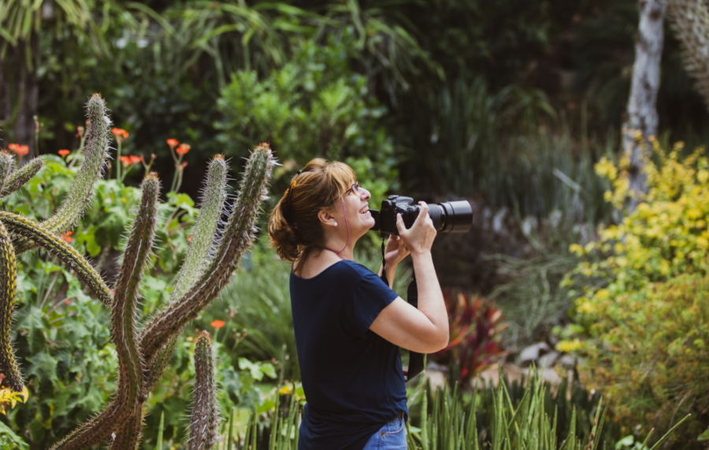

Rosangela Richa
fotografia

O Jardim Botânico é o passeio perfeito para famílias e casais que curtem a natureza e querem fazer um programa diferente de ir à praia. As palmeiras imperiais, que podem chegar à altura de um prédio de 15 andares, são o cartão de visitas dessa área de 540 mil metros quadrados, mas há mais de 3.400 espécies de plantas vindas do mundo todo. Aproveite para descobrir árvores que pouca gente já viu de perto, como jambeiros, craveiros-da-índia e até mesmo o pau-brasil. Tire o dia para caminhar pelas alamedas e não deixe de conhecer o orquidário e Lago da Vitória-Régia. O passeio também pode ser feito a bordo de carrinhos elétricos.
A maneira mais fácil de chegar ao Jardim Botânico é de metrô. É só descer na Estação Botafogo, pegar o ônibus Metrô na Superfície no sentido Gávea e descer na estação Jardim Botânico.
Proteger o Corcovado e o monumento Cristo Redentor. Só isso já faria do Parque Nacional da Tijuca um lugar especial. Mas o Parque é muito mais que isso: protege a primeira floresta replantada do Mundo, uma infinidade de trilhas e cachoeiras, além de ruínas históricas do tempo das fazendas de café. Tudo isso bem no centro do Rio de Janeiro. O Parque Nacional da Tijuca é, sem dúvida, peça fundamental para fazer do Rio a Cidade Maravilhosa.
Além de estar presente em quase todas as imagens marcantes do Rio de Janeiro e ser uma excelente alternativa de lazer para a população e turistas, o Parque Nacional da Tijuca tem muita história: suas florestas são resultado do primeiro grande projeto de reflorestamento no Mundo, iniciado em 1861. Após a destruição quase total da floresta para produção de carvão e plantio de café, as fontes de água que abasteciam a cidade começaram a secar. Começou então um grande processo de desapropriação das fazendas de café e replantio de mais de 100 mil árvores. Visitar as exuberantes florestas do Parque Nacional da Tijuca 150 anos depois, nos permite ver como a natureza tem uma incrível capacidade de recuperação quando o homem percebe os impactos que causa e toma medidas concretas.